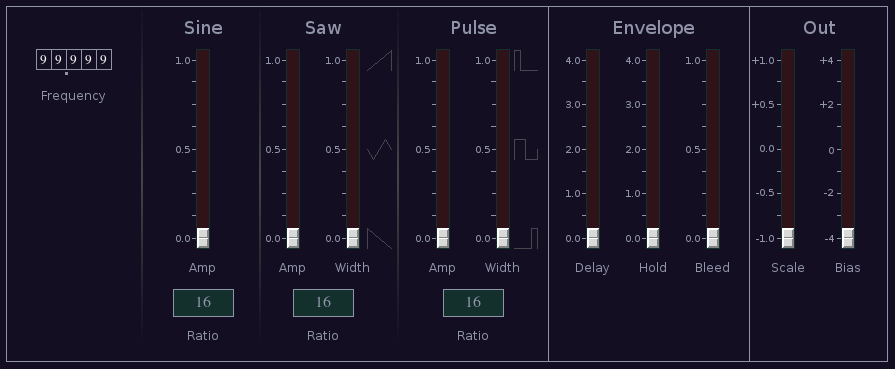

Lfo1
 Previous( pitchshifter )
Next( lfo2 )
Home
Contents
Previous( pitchshifter )
Next( lfo2 )
Home
Contents
LFO1 is a simple control synth LFO. It produces simultaneous sine, sawtooth/triangle and pulse waves. The frequency of each waveform may be individually offset from the others. Outputs are provided for each waveform individually are for a mix of the three waves. The mixed version has a delayed onset envelope and scale and bias controls.

Frequency tumbler, sets
reference frequency.
Sine Amp, sine wave amplitude.
Sine Ratio, Sine frequency relative master frequency.
See multi state button.
Saw Amp
Saw Width, change wave shape between sawtooth and triangle.
Saw Ratio
Pulse Amp
Pulse Width
Pulse Ratio
The wave amp controls apply only to the mixed output. The signals which appear at the individual wave outputs are always ±1.
The envelope also only applies to the mixed output.
Delay, onset delay time.
Hold, envelope hold time after all keys are up.
Both delay and hold times control two segments of the envelope. For delay, on first key down the envelope waits delay seconds and then has an attack of delay seconds. After all keys are up the envelope holds for hold seconds and then enters a release stage of hold seconds.
Bleed, amount of signal which bleeds through the envelope. At the maximum value the envelop is bypassed.
Scale, scales combined signal amplitude.
Bias, adds fixed offset to combined signal.
Previous( pitchshifter ) Next( lfo2 ) Home Contents